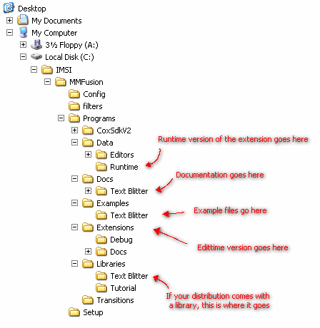

Depending on what distribution you have acquired depends on the type of installation required
Most distributions will come in the form of a self extracting exe file (with no un-installer). You can run the installer and everything will be installed into the correct locations. However, if you have obtained the extension in the form of a zip file, you will be required to manually copy the extension to the MMF extension directory.
To install the edit-time version of the extension, copy 'txtblt.cox' from the /bin/ directory to 'c:/imsi/mmfusion/programs/extensions/'. You must also copy the optimised and smaller 'txtblt.cox' from the runtime folder to 'c:/imsi/mmfusion/programs/data/runtime'. Once complete the extension should be installed correctly. Please note, the exact directory location may be slightly different on your computer
To uninstall the extension simply remove those two files. You are also required to remove them in this method if you downloaded the self extracting installer
If you are unsure of the directory structure, here is a map and where everything should go

Content and Design are Copyright (c) 2001-2002 Christopher Lightfoot. All rights reserved.